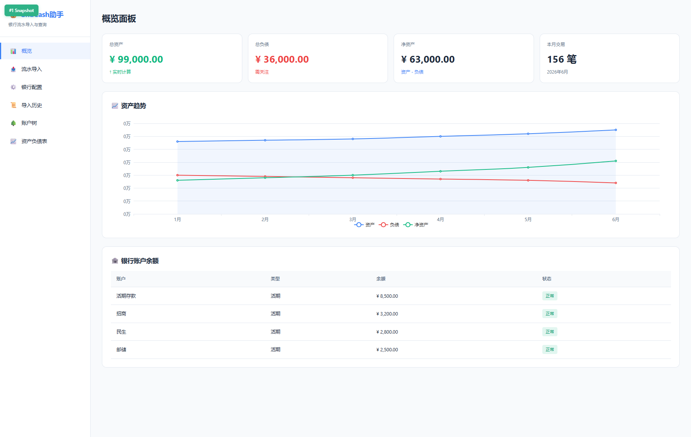
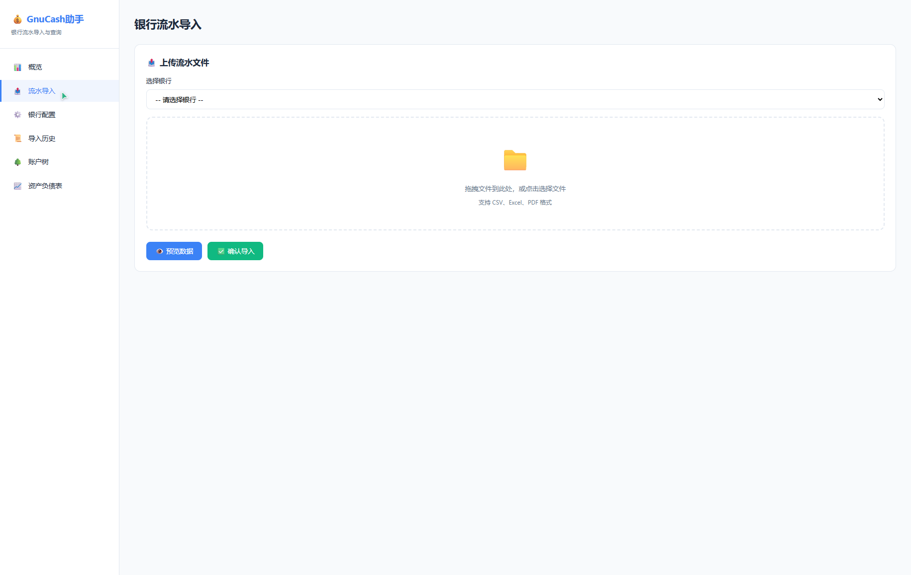
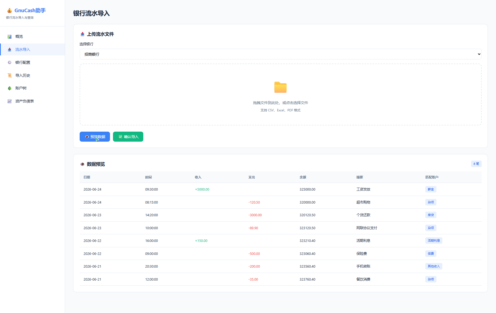
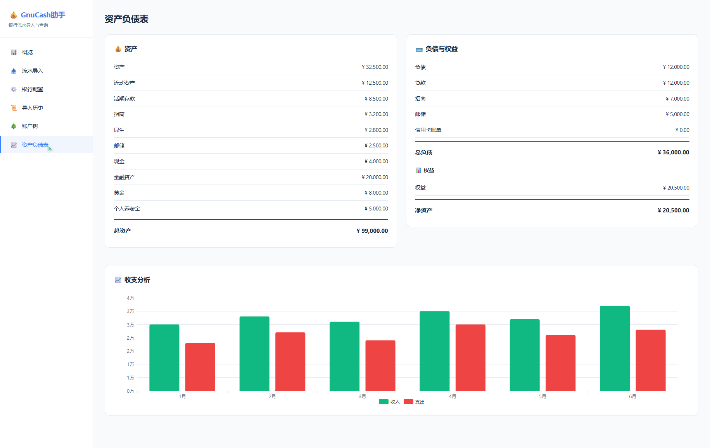
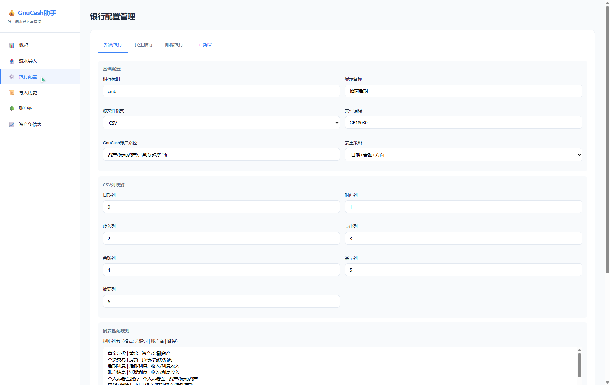
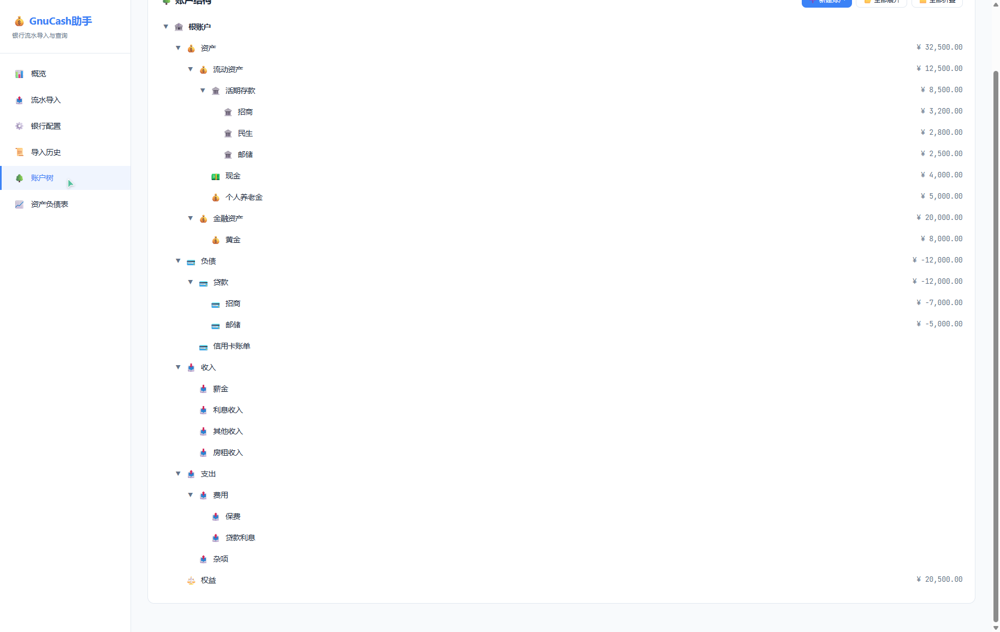
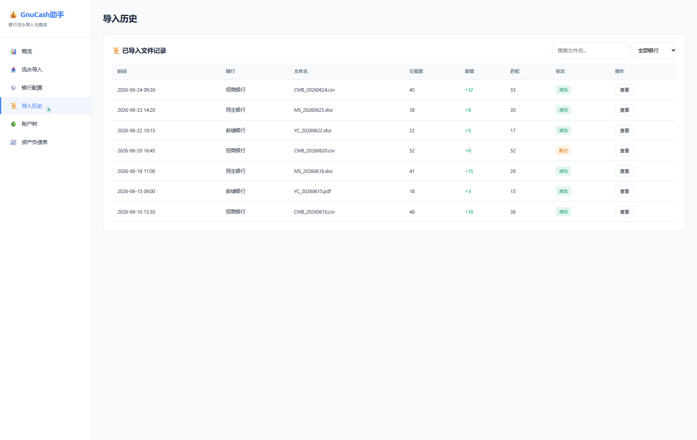

GnuCash 记账助手
一、Demo 简介
是什么
GnuCash 记账助手是一款基于 HTML + JavaScript 的单页 Web 应用， 帮助用户将多银行（招商、民生、邮储等）的流水文件一键导入到 GnuCash 财务软件中， 并提供账户管理、余额查询、资产负债表等可视化功能。
面向谁
核心用户是使用 GnuCash 进行个人或家庭财务管理的群体， 尤其是需要定期从多个银行导入流水、手动对账繁琐的用户。 也面向希望了解银行流水自动化处理流程的技术爱好者。
主要功能
- 银行流水导入 — 支持 CSV/Excel/PDF 格式，选择银行后上传文件，预览数据并一键导入 GnuCash
- 可视化银行配置 — 每家银行的列映射、摘要匹配规则、贷款拆分规则均可在线编辑
- GnuCash 账户树 — 层级展示资产/负债/收入/支出/权益账户，支持展开折叠和新建账户
- 资产负债表与收支分析 — 左右分栏展示资产负债，月度收支柱状图直观呈现
- 导入历史查询 — 记录每次导入的时间、银行、文件、交易数、新增数、匹配状态




二、Demo 创作思路
灵感来源
我一直使用 GnuCash 管理个人财务，但每月从招商银行、民生银行、邮储银行下载流水后，
需要手动逐笔录入到 GnuCash 中，耗时且容易出错。
之前已经用 Python 写了一个命令行脚本 update_current.py 来自动化这个过程，
但脚本缺乏可视化界面，配置修改需要手动编辑文本文件，对非技术用户不友好。
于是想到：能否基于现有的 Python 逻辑，用 TRAE 快速开发一个 Web 界面，
让配置管理和流水导入变得像操作网页一样简单？
想解决的问题
- 配置门槛高：不同银行的 CSV/Excel 列顺序不同，需要反复修改配置文件
- 导入过程黑盒：命令行运行后看不到中间步骤，出错难以排查
- 账户管理不便：GnuCash 的账户树结构复杂，新建账户需要打开软件操作
- 历史记录缺失：每次导入后没有记录，无法追溯哪些文件已处理
为什么做这个方向
个人财务管理是"学习工作"赛道中非常实用的场景。 GnuCash 是开源软件，用户群体稳定但工具链薄弱， 尤其是中文用户缺乏完整的银行流水导入方案。 这个 Demo 不仅解决了我自己的痛点，也展示了一种"用 AI 辅助开发工具"的模式： 将已有的业务逻辑（Python 脚本）包装成友好的 Web 界面， 降低使用门槛，让更多人受益。
三、Demo 体验地址
本项目为纯前端 HTML 单页应用，无需后端服务，可直接在浏览器中打开体验。
demo.html 即可。
应用包含完整的交互功能（银行配置编辑、文件上传预览、账户树操作、导入日志模拟等）。
文件位置：GnuCash/demo/ 目录下
demo.html— 主页面（单页应用）assets/app.js— 业务逻辑与交互_shared/js/echarts.min.js— 图表库
四、TRAE 实践过程
整体开发流程
整个 Demo 的开发完全在 TRAE 中完成，从需求分析到代码实现再到截图验证， 全程通过自然语言对话驱动，没有手写一行代码。 以下是关键步骤：
Step 1：分析现有代码结构
首先让 TRAE 分析已有的 Python 脚本 update_current.py 和银行配置文件的格式。
TRAE 读取了脚本的核心逻辑，梳理出 11 步处理流程：
定位流水文件 → 解析格式 → 解压 GnuCash → 构建账户树 → 提取已有交易 → 去重匹配 → 构造 XML → 写入文件 → 验证完整性 → 余额校验 → 归档。
同时解析了三家银行的 config.txt、memo_rules.txt、loan_split_rules.txt 的字段含义。

Step 2：设计应用架构
基于分析结果，TRAE 设计了单页应用的 6 大模块：
概览面板、流水导入、银行配置、导入历史、账户树、资产负债表。
每个模块对应 Python 脚本中的一个功能环节，
例如"银行配置"模块直接映射到 banks/{bank}/config.txt 的可视化编辑。
Step 3：实现核心功能
TRAE 分步实现了所有功能模块：
- 银行配置：Tab 切换三家银行，表单编辑基础配置、列映射、摘要规则、贷款拆分规则
- 流水导入：拖拽上传区 + 银行选择 + 数据预览表格 + 模拟 11 步导入日志
- 账户树：递归渲染层级结构，按类型着色，支持展开/折叠/新建账户
- 资产负债表：左右分栏展示资产与负债，ECharts 绘制月度收支柱状图
- 导入历史：表格展示，支持银行筛选和文件名搜索


Step 4：迭代优化
在基础功能完成后，通过多轮对话进行了功能增强：
- 新增"+ 新增"按钮，支持动态添加银行配置（Tab 动态生成 + 面板动态渲染 + 导入下拉框同步）
- 新增"新建账户"按钮，支持在账户树中选择父账户并创建新账户（智能类型推荐）
- 新增"删除银行"功能，配置面板可一键删除并清理关联数据
Step 5：验证与截图
使用 TRAE 内置的浏览器工具启动本地服务器， 逐页截图验证所有功能模块的显示效果，共生成 7 张截图用于展示。
开发关键步骤截图（不少于 3 张）
关键任务对话的 Session ID（不少于 3 个）
- Session 1 — 分析现有代码结构：6a3ba748964cc9228631bbd1（分析 update_current.py 和银行配置格式）
- Session 2 — 开发 HTML Demo 主体：6a3ba748964cc9228631bbd1（创建 demo.html 和 app.js，实现 6 大模块）
- Session 3 — 功能迭代增强：6a3ba748964cc9228631bbd1（添加"新增银行"和"新建账户"功能）
- Session 4 — 验证与截图：6a3ba748964cc9228631bbd1（浏览器截图验证所有页面）
注：由于所有对话在同一 TRAE 工作区中连续进行，Session ID 相同。 可通过对话历史中的多轮任务记录验证开发过程。
五、开发心得
TRAE 的优势
- 代码理解能力强：TRAE 能准确解析 1500+ 行的 Python 脚本，提取出关键函数和数据结构
- 上下文保持好：多轮对话中始终记得之前的代码结构，增量添加功能时不会破坏已有逻辑
- 工具链完整：内置文件读写、代码编辑、浏览器截图等工具，开发-验证闭环无需切换环境
- 自然语言驱动：用中文描述需求即可生成代码，大幅降低前端开发门槛
遇到的挑战
- GnuCash XML 格式复杂：账户树用 GUID 关联，需要递归渲染，TRAE 一次性写出了正确的递归逻辑
- 动态添加银行配置：新增银行后需要同步更新 Tab、面板、导入下拉框，TRAE 通过事件监听和 DOM 操作实现了联动
- 模拟数据设计：为了让 Demo 有真实感，需要设计合理的账户余额和交易数据，TRAE 基于实际业务场景生成了 mock 数据
后续计划
这个 Demo 目前是纯前端展示，下一步计划接入后端 Python 脚本， 实现真正的文件解析、GnuCash XML 操作和数据库持久化。 同时考虑添加更多银行模板（工商、建设、农业等）， 让工具覆盖更广泛的用户群体。